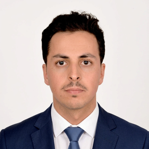
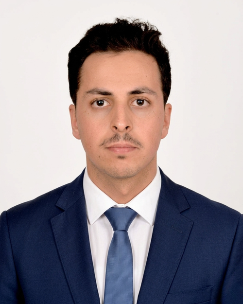

Abderrahman El Farchouni
PhD Researcher in Integrated Hydrology & Groundwater Recharge
Mohammed VI Polytechnic University (UM6P – IWRI) & University of Florence (UNIFI – DAGRI)
Connecting field evidence, geospatial data, and models for groundwater sustainability.
5 peer-reviewed publications
Best Poster Award, EUniWell Workshop 2025
Morocco–Italy cotutelle PhD
About Me
I am a PhD researcher working at the intersection of hydrology, hydrogeology, geospatial science, and data-driven modeling. I am completing a cotutelle doctorate between the International Water Research Institute at Mohammed VI Polytechnic University in Morocco and the Department of Agriculture, Food, Environment and Forestry at the University of Florence in Italy.
My research investigates how groundwater is recharged, stored, and affected by environmental change in semi-arid regions. Using the Haouz–Mejjate aquifer system as a principal case study, I am developing an integrated SWAT–MODFLOW modeling framework to quantify recharge and assess the effects of climate variability and land-use/land-cover dynamics. I connect model development with field evidence from hydrogeophysics, groundwater monitoring, hydrochemistry, and stable isotopes, as well as satellite observations and machine-learning methods.
My broader goal is to turn multidisciplinary environmental data into defensible hydrogeological understanding and practical evidence for sustainable water governance. I am interested in research collaborations involving groundwater recharge, integrated modeling, Earth observation, GeoAI, and water-resource decision support.

Skills
-
Hydrological & Hydrogeological Modeling
- SWAT / SWAT+ and MODFLOW for integrated surface–groundwater modeling
- GMS for groundwater flow modeling
- GW Vistas
- Model calibration and uncertainty analysis
-
Hydrochemistry & Isotopes
- Major-ion groundwater chemistry and water quality interpretation
- Stable isotope tracing of groundwater recharge (δ²H, δ¹⁸O)
- Hydrogeochemical diagrams and multivariate analysis
- Sampling design, collection, and lab analysis
-
Remote Sensing & GIS
- Google Earth Engine for large-scale geospatial analysis (LULC, NDVI/NDWI, evapotranspiration, recharge mapping)
- ArcGIS, QGIS for spatial analysis, interpolation, and cartography
- Satellite data processing (Sentinel-2, Landsat, CHIRPS, WaPOR, TerraClimate, SMAP, GPM)
-
Geophysics & Field Methods
- Geophysical surveys: ERT, Magnetic Resonance Sounding (MRS), seismic surveys, EM38
- Piezometric data monitoring systems and streamflow measurements
- Pumping tests and aquifer characterization
- Isotope (δ²H, δ¹⁸O) and hydrochemical sampling
- Geophysics software: Prodiviner, Res2DInv
-
Programming & Data Science
- Python: pandas, scikit-learn, TensorFlow, Xarray, matplotlib
- Machine learning & deep learning: KNN, Random Forest, LSTM, GAIN, PINN
- R for statistical and hydrogeochemical analysis (PCA, clustering)
- SQL & SQLite for database management
-
Scientific Communication
- LaTeX for academic writing and reports
- Adobe Illustrator for publication-quality figures
- Microsoft Office Suite
-
Languages
- Arabic (Native)
- French (Fluent)
- English (Fluent)